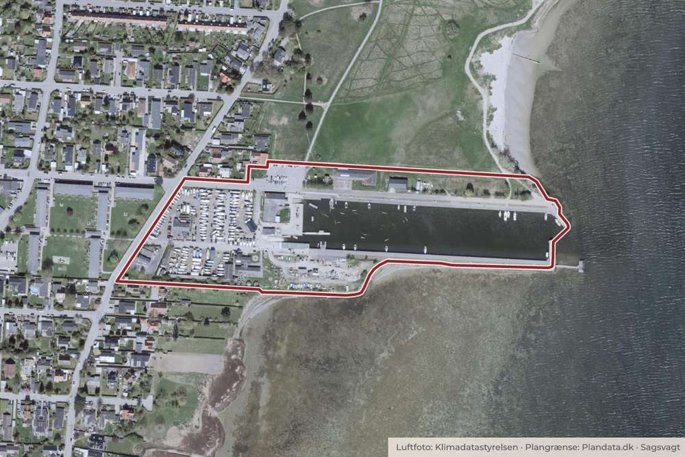

På dagsordenen 30. november, By- og Planudvalget, Hvidovre
Endelig vedtagelse af Lokalplan 350 for Hvidovre Havn

Kort: © OpenStreetMap-bidragydere. Plangrænse: Plandata.dk, Hvidovre Kommune.

Kort fortalt
- Forslaget
- Godkende, at Lokalplan 350 for Hvidovre Havn vedtages endeligt med de i
- Hvem
- By- og Planudvalget, Hvidovre Kommune
- Hvornår
- Mandag 30. november 2026
- Status
- På dagsordenen. Sagen behandles på mødet.
Er noget forkert her? Skriv til os
Hvad kan du gøre?
- Skriv til politikerne
- Udvalgets møder er lukkede, men du kan skrive til medlemmerne før mødet mandag 30. november 2026. Du finder dem på hvidovre.dk.
Læs hele sagen Kommunens egen tekst
Indstilling
Direktøren indstiller til By- og Planudvalget at anbefale over for Kommunalbestyrelsen
1. at godkende, at Lokalplan 350 for Hvidovre Havn vedtages endeligt med de i
sagsfremstillingen nævnte ændringsforslag a) – k).
Sagsfremstilling
Center for Plan og Miljø har udarbejdet dette dagsordenspunkt.
Forslag til Lokalplan 350 for Hvidovre Havn (vedlagt som bilag ”Forslag til Lokalplan 350 for
Hvidovre Havn”) har været fremlagt i offentlig høring, og skal nu vedtages endeligt.
I løbet af høringsperioden er der kommet 71 reaktioner med høringssvar fra 69 grundejere,
foreninger og selskaber. Enkelte personer har således afgivet mere end ét høringssvar. Alle
høringssvarene er samlet i ét dokument, hvor de kan læses i deres helhed (vedlagt som bilag
”Samlede høringssvar til forslag til Lokalplan 350 for Hvidovre Havn”).
Høringssvarene er alle blevet behandlet i en hvidbog (vedlagt som bilag ”Hvidbog over
høringssvar til forslag til Lokalplan 350 for Hvidovre Havn). I hvidbogen er behandlingen af
høringssvarene opdelt i fem hovedtemaer hver med en række underemner. I de forskellige
temaer inddeles og behandles samtlige høringssvar under relevante emner. Et høringssvar kan
således være opdelt i flere dele og blive behandlet under flere forskellige emner, hvis det
vedrører flere forskellige emner.
Hvert emne under hovedtemaerne er opbygget med et kort resume af de dele af
høringssvarene, der relaterer sig det pågældende tema, hvorefter administrationen
kommenterer på disse. Herefter giver administrationen sine eventuelle anbefalinger om
ændringer til Lokalplan 350.
Høringssvarene og anbefalinger om ændringer
Høringssvarene til lokalplanen omhandler mange forskellige emner, og relaterer sig både til
konkret indhold i lokalplanen, samt forhold som ikke kan reguleres med en lokalplan.
Høringssvarene giver anledning til, at administrationen anbefaler, at der foretages en række
ændringer i Lokalplan 350 i forbindelse med den endelige vedtagelse af lokalplanen.
I lokalplanens redegørelse anbefales følgende ændringer:
a) at teksten på side 18 under overskriften Naturfredning opdateres med berigtigelse af
henvisninger til rette bekendtgørelse: ”For vandarealet gælder
fredningsbekendtgørelsen for Kalvebodernes vandarealer (bekendtgørelse nr. 545 af
2012), der har til formål at bevare Kalveboderne som et rekreativt område og beskytte
området som en vigtig rasteplads for vandfugle. Bekendtgørelsen fastsætter et generelt
forbud mod en række indgreb og aktiviteter, dog med de undtagelser, der fremgår af
bekendtgørelsens § 10, stk. 2.”
b) at der på side 20 indsættes et nyt afsnit i redegørelsen med overskriften
”Ledningsforhold”, hvori vand- og afløbsledningerne samt el-transmissionsledningen
omtales og vises på kort.
I lokalplanens bestemmelser anbefales følgende ændringer:
c) at noten til § 3.1 udgår og at ordet sauna i § 3.2 erstattes af følgende sætning: ”mindre
vinterbadefaciliteter, som f.eks. saunaer, omklædningsfaciliteter og lignende, til brug for
klubber, foreninger og institutioner.”
d) at lokalplanens § 6.4 ændres, så følgende sætning om opbevaringsbygningen på
sydmolen udgår: ”Bygningen må have et etageareal på maksimalt 50 m².”
e) at sidste punkt i § 6.4 ændres til: ” ”Bål og grillpladser, lysmaster/lysstandere, bænke,
skraldespande, træningsredskaber og lignende byrumsinventar.”
f) at lokalplanens § 8.3 om vinteropbevaring ændres med følgende tekst, så perioden for
vinteropbevaring udvides fra 30. september til 1. juni i stedet for 1. maj:
”Vinteropbevaring af både skal placeres inden for de på planbilag 3 markerede områder.
I sommerperioden fra 1. juni – 30. september må arealerne til parkering, som vist på
planbilag 5, ikke anvendes til oplag af både, men skal anvendes til parkering.”
Dermed udgår følgende sætning fra bestemmelsen: ”[...] Denne bestemmelse finder
først anvendelse, når skur A, som vist på planbilag 2, er fjernet.
Vinteropbevaring af både skal organiseres som vist på planbilag 4.”
g) at der indsættes en forklarende note til § 8.3 på side 26 med følgende ordlyd: ”Planbilag
4 viser et princip for, hvordan bådene kan organiseres, når skur A, som vist på planbilag
2, flyttes og træerne langs den del af Hvidovre Strandvej, der ligger inden for
lokalplanens område jf. planbilag 3, plantes.”
h) At der til § 8.8 tilføjes følgende tekst: ”Trærækken mellem vej og området til
vinteropbevaring af både/parkering langs den del af Hvidovre Strandvej, der løber inde
på havnens område, må først etableres, når Skur A, som vist på planbilag 2, er fjernet.”
i) at § 9.2 ændres så § 9.2 fremover lyder: ”Der skal etableres veje og stier indenfor
lokalplanens område med en omtrentlig placering som vist på planbilag 5.”
j) at planbilag 5 ændres, så de optegnede stier mellem bådehallen og roklubbens
foreningshus fjernes.
k) at lokalplanens § 11.4 om antenneanlæg ændres til: ” Der må ikke etableres
mobilantenner inden for delområde 1 og 2.” Dermed udgår teksten ”[…] eller andre
antenneanlæg”
Politiske beslutninger og aftaler
By- og Planudvalget besluttede den 1. september 2025, punkt 8, at igangsætte arbejdet med
Lokalplan 350 for Hvidovre Havn. Det blev besluttet, at lokalplanen udarbejdes på baggrund af
projektforslag C, med en fleksibel bebyggelsesstruktur, mulighed for blandede anvendelser, et
sammenhængende byrumsudtryk samt fokus på klimatilpasning og inddragelse.
Kommunalbestyrelsen godkendte den 25. august 2026, punkt 4, at sende forslag til Lokalplan
350 for Hvidovre Havn i offentlig høring i fire uger, samt at der i løbet af høringsperioden blev
afholdt et borgermøde om lokalplansforslaget. Endelig godkendte man, at der ikke skulle
gennemføres en miljøvurdering af lokalplanen.
Økonomiske konsekvenser
Der er ingen økonomiske konsekvenser for Hvidovre Kommune.
Retsgrundlag
Lokalplaner udarbejdes efter planlovens §§ 13-16, jf. lovbekendtgørelse nr. 572 af 29. maj
2024. Offentliggørelse og vedtagelse af planer sker efter samme lovs §§ 24-27.
Høring
Et lokalplansforslag skal fremlægges i offentlig høring i mindst fire uger, jf. planlovens § 24, stk.
Forslaget til Lokalplan 350 for Hvidovre Havn har været fremlagt i offentlig høring i perioden fra
den 1. september 2026 til den 29. september 2026. I løbet af høringsperioden er der kommet
71 reaktioner med høringssvar fra 69 foreninger, brugere og borgere.
Den 10. september 2026 blev der i Hvidovre Roklubs lokaler på havnen afholdt et offentligt
tilgængeligt borgermøde om lokalplansforslaget.
På baggrund af de modtagne høringssvar anbefaler administrationen, at der foretages en
række mindre ændringer af lokalplanen i forbindelse med den endelige vedtagelse. Det
vurderes ikke, at ændringerne har en sådan karakter, at det giver anledning til at planen skal
sendes i fornyet høring.
Klima-, miljø- og bæredygtighedsmæssige konsekvenser
Der er ikke umiddelbart klima-, miljø- eller bæredygtighedsmæssige konsekvenser i denne sag.
Kommunalbestyrelsen har ved behandlingen af lokalplansforslaget, den 25. august 2026, punkt
4, på baggrund af en screening af lokalplanens miljøpåvirkninger i bred forstand godkendt, at
der ikke skulle gennemføres en miljøvurdering af planen.
Kilde: Hvidovre Kommune, By- og Planudvalget, dagsorden fra mødet mandag 30. november 2026, punkt 7. Læs den originale sag hos kommunen.